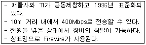

PC정비사-1급 (2007-09-16 기출문제)
1과목: PC운영체제
1. 64비트 Windows XP에 대한 설명으로 올바른 것은?
- 32비트 전용 CPU에도 64비트 운영체제를 설치할 수 있다.
- 64비트 시스템을 꾸미기 위해서 메인보드, 그래픽 카드, 하드디스크 등 모든 하드웨어가 64비트용 이어야 한다.
- 기존의 32비트 장치 드라이버 파일을 그대로 사용할 수 있다.
- 128GB의 RAM과 16TB의 가상 메모리를 지원한다.
(정답률: 85%)

2. 리눅스에서 ‘test’라고 하는 파일 내에 ‘ICQA’라는 단어를 찾기 위한 명령은?
- grep test ICQA
- grep ICQA test
- find -name ICQA test
- find -name test ICQA
(정답률: 87%)
3. 다음 중 프로세스 스케줄링의 종류가 아닌 것은?
- FIFO(First In First Out)
- Round Robin
- Shortest Job First
- Semaphore
(정답률: 78%)
4. Windows XP에서 사용할 수 없는 파일 시스템은?
- NTFS
- FAT16
- i-node
- CDFS
(정답률: 91%)
5. 디스크 어레이(Array) 구축 방식 중 Windows XP에서 구축할 수 없는 것은?
- 스트라이프 볼륨
- 미러 볼륨
- Raid-4 볼륨
- 스팬 볼륨
(정답률: 74%)
6. Windows XP Professional의 로컬그룹에 대한 설명으로 잘못된 것은?
- Administrators : 시스템 관리자 그룹으로 모든 권한을 가지고 있으며 직접 사용 권한을 변경할 수 있다.
- Backup Operators : 백업 관리자 그룹으로 파일을 보호하는 사용 권한에 관계없이 컴퓨터의 파일을 백업하고 복원할 수 있다.
- Power Users : 파워 유저 그룹으로 사용자 계정을 만들 수 있지만, 직접 만든 계정만 수정하거나 삭제할 수 있다.
- Guests : 사용자 그룹으로 응용 프로그램 실행, 로컬 및 네트워크 프린터 사용, 워크스테이션 종료 및 잠금과 같은 대부분의 일반적인 작업을 수행할 수 있다.
(정답률: 64%)
7. Windows XP의 디스크관리에 대한 설명 중 잘못된 것은?
- Windows를 설치하고 부팅한, 시스템 드라이브의 드라이브 문자는 변경할 수 없다.
- CD-ROM의 드라이브 문자는 고정되어 있으며, Windows 상태에서 변경할 수 없다.
- 전체 이동식 저장장치는 자동인식에 의하여 관리 되므로 이동식 저장소라는 관리 도구를 이용해 관리할 필요성이 적다.
- 디스크 조각 모음은 로컬 볼륨을 분석하고 조각난 파일과 폴더를 찾아 통합하는 시스템 유틸리티이다.
(정답률: 72%)
8. Windows를 설치한 후 각종 하드웨어 장치가 올바르게 설정 되었는지 점검하기 위해 시스템 등록정보의 장치관리자를 살펴보니 SCSI 장치에 물음표(？)가 표시 되어 있다. 올바른 해석은?
- 장치 오작동
- 장치 충돌
- 드라이버 미설치
- 장치를 사용하지 않도록 설정
(정답률: 90%)
9. Windows XP의 인터넷 정보 서비스(IIS)를 이용하여 제공하는 인터넷 서비스의 종류가 아닌 것은?
- NNTP 서버 구축
- Web 서버 구축
- SMTP 서버 구축
- FTP 서버 구축
(정답률: 73%)
10. 10m 내외의 단거리에서 사용하는 개인 무선 네트워킹 솔루션으로 가급적이면 케이블을 이용하지 않고 무선으로 각 가정의 기기들을 연결할 수 있는 저렴한 단거리 무선 네트워크를 뜻하는 것은?
- LAN
- MAN
- VAN
- PAN
(정답률: 82%)
11. 인터넷 옵션에 관한 설명 중 잘못된 것은?
- 보안 : 보안수준을 '낮음'으로 설정하면 쿠키를 허용하지 않기 때문에 웹사이트가 제대로 나타나지 않는다.
- 임시 인터넷 파일 : 열어본 페이지를 다음에 빨리 볼 수 있도록 저장되어 있다.
- 열어본 페이지 목록 : 사용자가 방문한 웹 페이지 주소를 설정된 보관일 수 동안 보관한다.
- 홈페이지 : 익스플로러가 실행되면서 처음으로 표시될 웹 페이지 주소로 변경할 수 있다.
(정답률: 94%)
12. 바이러스나 악성 코드가 전자우편을 통해 침투하므로 주의가 필요하다. 첨부 파일의 확장자가 무엇이냐에 따라 안정성을 판단하고 확장자가 ‘exe’인 파일처럼 시스템을 공격할 확률이 높은 파일을 걸러내는 Windows XP 서비스 팩 2의 기술을 무엇이라고 하는가?
- Spyware
- Macro virus
- ICF(Internet Connection Firewall)
- AES(Attachment Execution Service)
(정답률: 62%)
13. 다음 열거한 파일들은 Windows XP 부팅 시 필요로 하는 시스템 파일이다. 그 기능에 대한 설명 중 잘못된 것은?
- HAL.DLL - 하드웨어 추상화 파일
- MOUNTMGR.SYS - 저장 미디어를 사용할 수 있도록 하는 파일
- NTDLL.DLL - 기본 커널을 관리하는 파일
- PARTMGR - 파티션 정보를 관리하는 파일
(정답률: 44%)
14. 악성 코드에 감염되면 다른 컴퓨터로 악성 코드를 퍼트리기 위해 인터넷 자원을 사용하기 때문에 인터넷이 느려진다. 현재 사용 중인 컴퓨터가 악성 코드에 감염 되었는지를 확인할 수 있는 명령어는?
- IPCONFIG
- NETSTAT
- LISTENING
- ESTABLISHED
(정답률: 64%)
15. Windows XP의 인터넷 정보 서비스(IIS)에 기본적으로 설정되는 HTTP 오류 코드와 의미가 잘못 연결되어 있는 것은?
- 400 : Bad request, 클라이언트의 잘못된 요청으로 처리할 수 없음
- 401 : Unauthorized, 클라이언트의 인증 실패
- 403 : Forbidden, 접근이 거부된 문서를 요청함
- 404 : Request-URI too long, URL이 너무 김
(정답률: 79%)
2과목: PC주변기기
16. 인터레이스 모드 모니터에서 주사율과 수직 주파수간의 관계는?
- 주사율 = 수직 주파수
- 주사율 = 수직 주파수/2
- 주사율 = 수직 주파수*2
- 주사율 = 수직 주파수/3
(정답률: 80%)
17. 디스크에 대한 설명 중 잘못된 것은?
- 하드디스크는 연결방식에 따라 PATA, SATA, SCSI 방식 등이 존재한다.
- SATA 하드디스크는 9핀 커넥터를 사용하며, 하나의 커넥터에 하나의 하드디스크를 연결할 수 있다.
- PATA는 병렬 방식으로 데이터가 전송되며, 하나의 케이블에 2개의 디스크를 연결할 수 있다.
- SCSI 방식은 방식에 따라 7 - 15개의 장치를 한꺼번에 장착할 수 있다.
(정답률: 50%)
18. DVD의 규격에 대한 설명으로 잘못된 것은?
- 비디오, 오디오, 컴퓨터 데이터를 포괄하는 저장매체이다.
- '16:9' 와이드 화면을 수용하며, 음향은 5.1 채널이 지원된다.
- MPEG 4에 따라 부호화하여 저장한다.
- 보통 4.7GB에서 최대 17GB까지 저장 가능하다.
(정답률: 85%)
19. CD-ROM 드라이브는 배속과 전송속도(KB/sec)에 따라 데이터의 전송능력이 달라진다. 다음 중 배속과 전송속도의 표현이 잘못 연결된 것은?
- 8배속 - 1200(KB/sec)
- 10배속 - 1500(KB/sec)
- 24배속 - 3200(KB/sec)
- 32배속 - 4800(KB/sec)
(정답률: 69%)
20. 광디스크에 사용되는 라이트스크라이브(LightScribe) 기술에 대한 설명으로 잘못된 것은?
- 레이저를 이용해 사용자가 원하는 문자나 도안을 CD 또는 DVD 미디어 표면에 인쇄하는 기능이다.
- 광학저장장치가 라이트스크라이브를 지원해야만 사용할 수 있다.
- 라이트스크라이브가 지원되는 특수 코팅된 전용 공 CD 또는 DVD에만 사용할 수 있다.
- 한번 기록된 문자나 도안을 다시 지우고 입력할 수 있다.
(정답률: 67%)
21. 키보드의 접점 방식에 대한 설명 중 잘못된 것은?
- 멤브레인 - 두 장의 필름을 겹쳐 놓고 그 위에 고무로 만든 키 캡 작동기를 올려놓은 구조로 주로 저가형 또는 보급형에 널리 사용된다.
- 펜타그래프 - X자형의 특이한 키캡 지지대 덕분에 키의 모서리 부분을 눌러도 중앙을 눌렀을 때와 같이 입력이 되는 특징이 있으며, 소형화와 슬림화가 쉽고 비교적 저렴하여 노트북 및 미니사이즈 키보드에 자주 이용된다.
- 기계식 - 각각의 키마다 독립적인 스위치가 존재하여 이를 PCB기판에 올려놓은 방식으로 키의 감촉과 정확성이 우수해 고가의 서버나 키보드 사용률이 높은 곳에 주로 사용된다.
- 러버돔 - 물리적인 접점을 가지지 않는 키보드 방식으로써, 캐퍼시터와 일련의 회로가 스위치의 역할을 대신한다.
(정답률: 48%)
22. 모니터와 그래픽 카드 사이의 채널을 의미하는 것으로, 최적의 해상도와 색상을 사용자 조작 없이 자동으로 조절하기 위해 사용하는 것은?
- DDC
- BNC
- 마이컴
- OSD
(정답률: 64%)
23. 3D 그래픽카드에서 제공되는 기능 중에서 3차원 물체의 움직임이나 입체감을 표현할 때 사용되는 것은?
- 디더링
- 지오메트리
- 페이지 브리핑
- 모아레
(정답률: 72%)
24. PC에 사용되는 다음의 장치들 중에서 속도가 가장 빠른 것은?
- 메인 메모리(Main Memory)
- CPU 레지스터(Register)
- ROM(Read Only Memory)
- CD-ROM
(정답률: 59%)
25. 주기억 장치로부터 수행할 명령을 가져와 레지스트리에 쓰기까지의 시간은?
- Search Time
- Instruction Time
- Seek Time
- Access Time
(정답률: 45%)
26. Ultra DMA Mode에 대한 설명으로 올바른 것은?
- 모든 데이터가 CPU를 통과해야 처리되는 Mode이다.
- Ultra DMA mode 5는 100.0 MB/sec의 전송 속도를 지원한다.
- 최초 Microsoft사에 의해서 제안이 되었다.
- 외장형 저장 장치를 연결하는데 사용되는 규격이며, 1~10까지 10가지 Mode가 지원된다.
(정답률: 75%)
27. ATX 메인보드에 대한 설명 중 잘못된 것은?
- 메인보드나 카드 등의 크기나 모양을 폼팩터(Form Factor)라고 하는데 ATX 방식은 바로 메인보드의 폼팩터를 의미하는 것이다.
- ATX 보드는 AT방식의 메인보드를 90도 꺾어놓은 모양으로 되어있다.
- PS/2, 패러럴포트, 시리얼포트, USB포트 등이 메인보드의 측면에 달려있어 외부기기를 연결하기가 편리하다.
- 슬롯방식 CPU만을 지원한다.
(정답률: 67%)
28. 다음에 설명하는 인터페이스 규격은?

- SCSI
- SATA
- USB
- IEEE-1394
(정답률: 62%)
29. 음성 압축 포맷에 대한 설명으로 잘못된 것은?
- Ogg 파일은 MP3 파일이 유료화된 것을 반대하여 만들어진 포맷이다.
- MP3 기법을 사용하면 44.1Khz CD음질을 지닌 오디오 사운드 데이터를 1/10이상으로 압축할 수 있다.
- MP3 파일은 Wav 파일로 다시 변환 했을 경우 원본 상태를 그대로 복원할 수 있으나, Ogg와 VQF는 불가능하다.
- VQF란 NTT에서 개발한 오디오 압축 기술로 MP3수준의 음질을 들을 수 있다.
(정답률: 62%)
30. PC 관리를 위한 장치 중 시스템과 전원 사이에 설치하여 일정한 전압을 유지시켜 주는 장치는?
- 항온 항습기
- AVR(Automatic Voltage Regulator)
- UPS(Uninterruptible Power Supply)
- 서지 보안기(Surge Protector)
(정답률: 67%)
3과목: 디지털 논리회로
31. 16진수 ‘1AF’를 8진수로 변환한 것은?
- 557(8)
- 657(8)
- 757(8)
- 857(8)
(정답률: 71%)
32. 10진수 589에 대한 BCD 코드는?
- 1100 1001 1010
- 0111 1011 1110
- 0101 1000 1001
- 1001 1000 0100
(정답률: 75%)
33. 다음 논리식 중 잘못된 것은?
- A'B' + AB = A
 B
B - AB+AB+1=1
- (A+B)'=A' B'
- A'B+AB+A'B'=A'+B
(정답률: 62%)
34. 오류검출 부호가 아닌 것은?
- 해밍 부호
- 패리티 부호
- 2-5진 부호
- 3초과 부호
(정답률: 82%)
35. BIOS IC와 비교하여 TTL IC의 장점으로 올바른 것은?
- 전력 소모가 적다.
- 신호의 전파지연시간이 짧다.
- 집적밀도가 높다.
- 하나의 출력 게이트에 보다 많은 입력 게이트를 연결할 수 있다.
(정답률: 45%)
4과목: PC유지보수
36. 올바른 모니터와 그래픽 카드 설정 및 사용 방법으로 잘못된 것은?
- 모니터 크기를 고려하여 해상도를 설정한다.
- 눈이 피곤하지 않도록 화면 주사율은 가장 낮은 주파수로 설정해서 사용한다.
- 장치에 맞는 드라이버를 설치해서 사용한다.
- 컴퓨터에 문제가 없으면 그래픽 하드웨어 가속 수준은 최대로 설정한다.
(정답률: 69%)
37. 컴퓨터 조립에 대한 설명 중 잘못된 것은?
- 메모리 설치 시 듀얼 채널을 구성하려면 2개의 메모리를 사용하여야 한다.
- 전면패널 커넥터 HDD LED, POWER LED, 리셋 SW, 전원 SW는 극성이 없으므로 전극에 상관없이 연결한다.
- PATA 방식의 HDD 두 개를 장착할 때는 마스터와 슬레이브를 구분하는 점퍼 설정을 해야 한다.
- SATA 방식의 하드디스크는 마스터와 슬레이브를 구분하는 점퍼를 설정할 필요가 없다.
(정답률: 71%)
38. Award BIOS의 STANDARD CMOS SETUP 내용 중 Halt on에 대한 설명으로 잘못된 것은?
- No error : 어떤 에러가 발생해도 POST(power on self test)를 계속 진행한다.
- All error : 바이오스가 치명적인 에러 검출 시 POST를 중지하고 알려준다.
- All but Keyboard : 키보드와 디스크 오류에 대해서만 POST를 중지한다.
- All but Diskette : 디스크 오류에 대해서만 POST를 중지한다.
(정답률: 94%)
39. Award BIOS의 PnP/PCI Configuration에서 일반적으로 설정할 수 있는 내용이 아닌 것은?
- 주변장치에 IRQ를 자동으로 부여할 것인지 수동으로 부여할 것인지 여부
- PnP 장치를 BIOS에서 관리할지, 운영체제에서 관리할지 여부
- USB 컨트롤러와 디스플레이 어댑터에 IRQ를 할당할 것인지 여부
- 가상(Virtual) 메모리 방식을 사용할 것인지 사용하지 않을 것인지 여부
(정답률: 84%)
40. BIOS Setup이 필요한 경우를 나열한 것 중 잘못된 것은?
- HDD Auto Detection 기능이 활성화되어있지 않은 상태에서 하드디스크를 추가로 장착한 경우
- 메인 메모리를 추가하거나 제거해 메인 메모리 용량을 조정하기 위한 경우
- 운영체제 로딩 전 비밀번호를 물어보도록 하기 위한 경우
- 부팅 장치의 순서를 조정할 필요가 있는 경우
(정답률: 70%)
41. PC에서 PnP를 지원하는 시스템 장치가 사용하는 IRQ와 DMA 채널 정보 등을 보관하는 영역은?
- ESCD(Extended System Configuration Data)
- NVRAM(Non-Volatile RAM)
- DMA
- CMOS ROM
(정답률: 60%)
42. 부팅 에러 메시지와 원인에 대한 설명 중 잘못된 것은?
- System Halted - 시스템의 어느 한 부분 쇼트, CPU 냉각팬 회전 감지 오류
- Gate A20 Error - 마우스의 컨트롤러 문제
- Non-System disk or disk error - 부팅 디스크에 운영체제가 없거나 시스템 파일이 손상된 경우 발생
- CMOS Checksum Error - CMOS 배터리 문제, 정전기 문제
(정답률: 83%)
43. DLL(Dynamic Link Library) 파일 관련 오류 발생 시 보호된 파일을 찾아내는 명령어는?
- sfc/scannow
- scanreg/restore
- convert C:/FS:NTFS /X
- sys A: C:
(정답률: 88%)
44. Windows XP에서 시스템에 오류가 발생할 때마다 마이크로소프트로 오류 내용을 보낼지 묻는 창이 열리는데 이창을 열리지 않도록 설정할 수 있는 곳은? (단 제어판은 ‘종류별 보기’로 설정되어 있다.)
- [제어판]-[성능 및 유지관리]-[시스템]
- [제어판]-[내게 필요한 옵션]
- [제어판]-[성능 및 유지관리]-[관리도구]-[데이터 원본(ODBC)]
- [제어판]-[성능 및 유지관리]-[관리도구]-[성능]
(정답률: 64%)
45. Windows에서 동영상을 재생할 때 소리가 나지 않는 원인으로 부적절한 것은?
- 동영상 파일이 손상되었다.
- 자막 파일이 손상되었다.
- 코덱(CODEC)이 맞지 않다.
- 코덱(CODEC)이 설치되지 않았다.
(정답률: 93%)
46. 컴퓨터 부팅 도중 모니터 화면이 심하게 떨리거나 영상이 출력되지 않는다. 그 발생 가능한 원인이나 대책으로 볼 수 없는 것은?
- 주파수 설정이 잘못되어 있으므로 주파수를 낮추어야 한다.
- 다른 주변기기와 충돌하거나 그래픽카드 혹은 모니터의 고장이므로 슬롯에 꽂힌 그래픽카드의 위치를 바꿔본다.
- 메인보드의 배터리가 방전되었으므로, 배터리를 교체한다.
- 그래픽카드에서 지원하지 않는 해상도로 잘못 설정되어 있으므로 그래픽카드와 모니터의 성능을 비교한다.
(정답률: 85%)
47. 회로시험기의 레인지를 DCV에 놓고 파워서플라이를 측정하려고 한다. 사용 용도로 가장 올바른 것은?
- 입력 전압이 올바른지 확인할 때 사용
- 출력 전압이 올바른지 확인할 때 사용
- 연결선의 단선 여부를 확인할 때 사용
- 출력 전류 값이 올바른지 확인할 때 사용
(정답률: 89%)
48. EIDE 방식의 하드디스크를 추가하였으나 인식하지 못할 때, 취할 수 있는 적절한 조치로서 잘못된 것은?
- 케이블이 정확하게 연결되었는지 케이블의 방향은 정확하게 연결되었는지에 대해 확인한다.
- 전원 커넥터가 제대로 접속되어 있는지 혹은 헐겁게 연결되어 있는지 확인한다.
- Master/Slave를 결정해 주는 점퍼가 제대로 설정되어 있는지 확인한다.
- 디스크 베이에 디스크가 견고하게 고정되어 있는지 확인한다.
(정답률: 75%)
49. PC 조립을 마친 후 컴퓨터에 전원을 넣었는데, 모니터 화면에 아무런 변화가 없을 때, 점검하는 과정 중 잘못된 것은?
- 컴퓨터에 전압은 연결됐는지, 적정 전압에 맞게 설정했는지 확인한다. 또한 파워 서플라이 자체에 전원 ON/OFF 스위치가 있는 것도 있는데, 이 스위치를 ON으로 설정했는지 확인한다.
- CPU와 RAM이 정확히 설치되어 있는지 확인 한다.
- 그래픽 카드의 장착 상태나 그래픽 카드에 이상이 없는지 확인한다.
- 하드디스크와 CD-ROM 드라이브, 플로피디스크 드라이브를 연결하는 케이블이 올바르게 연결되었는지 확인한다.
(정답률: 67%)
50. 오버클럭킹(Over Clocking)에 대한 일반적인 설명 중 잘못된 것은?
- CPU의 클럭 설정은 점퍼 비율(RATIO) 딥스위치를 조정하거나 BIOS 설정에서 조정한다.
- 오버클럭킹을 사용하게 되면 CPU의 온도가 오버클럭킹을 하기전보다 높아지므로 주의한다.
- 오버클럭킹에는 외부 클럭을 올리는 방법과 클럭 배수를 올리는 방법이 있다.
- 메인보드에서 지원하는 클럭 수 보다 높게 오버 클럭킹이 가능하다.
(정답률: 77%)
5과목: PC네트워크
51. OSI 계층모델에 대한 설명 중 잘못된 것은?
- 전송계층(Transport Layer) - 신뢰적인 데이터 전송을 담당한다. TCP 프로토콜은 전송계층의 좋은 예이다.
- 네트워크 계층(Network Layer) - 데이터의 주소를 기반으로 데이터의 경로 설정과 전송을 책임진다. IP 프로토콜은 네트워크 계층의 좋은 예이다.
- 물리계층(Physical Layer) - 물리적 매체에 대한 제어를 담당하는 부분으로서 비트 수의 전기적 또는 광학적 통신을 다룬다. FDDI는 물리계층에 대한 좋은 사례이다.
- 데이터 링크 계층(Data Link Layer) - 물리적 네트워크에서의 신뢰성 있는 데이터 전송을 책임진다.
(정답률: 60%)
52. 라우터에 대한 다음 설명 중 잘못된 것은?
- 라우터는 경로 설정을 담당하는 특별한 장치로서 OSI 7계층 중 네트워크 계층에서 정의 한 내용을 수행한다.
- 라우터는 경로 설정을 위한 경로 테이블을 유지하여야 하며 이 경로 테이블의 유지 방법에 따라 동적 라우팅과 정적 라우팅으로 구분할 수 있다.
- 라우터는 네트워크와 네트워크를 연결하는 기능과 경로설정 기능을 모두 갖고 있다.
- 라우터는 비교적 인접해 있는 네트워크들 사이의 연결을 담당하지만 브리지는 원격지 네트워크들 사이를 연결하는 데 자주 이용된다.
(정답률: 58%)
53. IP 주소에 대한 다음 설명 중 잘못된 것은?
- 서브넷 마스크는 네트워크 내의 IP 주소들을 효율적으로 분할하기 위해 사용된다.
- IP 주소는 네트워크의 규모에 따라 A, B, C 3개의 클래스로 지정할 수 있다.
- 서브넷 마스크를 이용하면 C클래스의 IP 주소도 여러 개의 분할된 네트워크로 분할할 수 있다.
- IP 주소의 각 클래스는 최상위 88비트를 이용해 결정한다.
(정답률: 57%)
54. TCP(Transmission Control Protocol)의 기능에 속하지 않는 것은?
- 분할된 세그먼트들을 전송할 경로를 결정하는 작업
- 전달할 메시지를 적당한 크기의 세그먼트(Segment) 단위로 분할하는 작업
- 전달 받은 여러 개의 세그먼트들을 모아서 원래의 메시지로 복구하는 작업
- 전달 받을 메시지를 구성하는 세그먼트 중에서 분실된 것이 있는지를 확인하는 작업
(정답률: 67%)
55. SNMP에서 정의된 다섯 가지 메세지중 에이전트(agent)에서 통보해야 될 어떤 정보가 발생했을 때 매니저(manager)에게 해당 상황을 알리기 위해서 사용하는 메시지는?
- get-request
- set-request
- get-next-request
- trap
(정답률: 53%)
56. TCP/IP를 사용하는 웹서버의 경우, 일반적으로 사용하는 포트 번호는?
- 21
- 22
- 80
- 100
(정답률: 74%)
57. 프록시 서버(Proxy Server)의 기능을 가장 올바로 설명한 것은?
- 자주 접속하는 사이트의 데이터를 서버에 저장 해 둠으로서 인터넷 속도를 개선한다.
- 접속했던 사이트의 기록을 제거한다.
- 인터넷 접속을 위한 통신 프로토콜이다.
- 웹 서비스외에 뉴스 그룹이나 FTP 서버에 접속하기 위해서는 반드시 있어야 한다.
(정답률: 61%)
58. 메일 서비스와 가장 관계가 먼 프로토콜은?
- SMTP
- FTP
- POP3
- MIME
(정답률: 86%)
59. 인터넷을 이용한 전자 상거래에서 멀티미디어 콘텐츠의 지적 소유권 보호를 위해 콘텐츠에 사용자 정보를 숨겨 저작권 및 소유권을 보호하는 방법은?
- Watermarking
- Encryption
- PGP(Pretty Good Privacy)
- SHTTP(Secure-HTTP)
(정답률: 79%)
60. URL에 대한 설명 중 잘못된 것은?
- URL은 인터넷 상의 정보 위치를 나타내기 위한 방법으로서 인터넷의 모든 자원 및 서비스에 대해 사용되는 표준 명명 규칙이다.
- URL의 구성은 프로토콜, 호스트명, 도메인명, 디렉터리 이름, 파일 이름 순으로 구성되며, “Protocol://host.domain/directory/file”와 같은 형식으로 표현될 수 있다.
- 호스트와 도메인은 지정된 컴퓨터를 식별하기 위해 사용되는 것으로서, 전세계적으로 유일한 이름을 갖을 뿐만 아니라, 하나의 IP 주소에는 오직 하나의 호스트 이름과 대응할 수 있다.
- URL에 참여할 수 있는 프로토콜들은 http를 비롯해서 ftp, news 등을 이용할 수 있다.
(정답률: 67%)